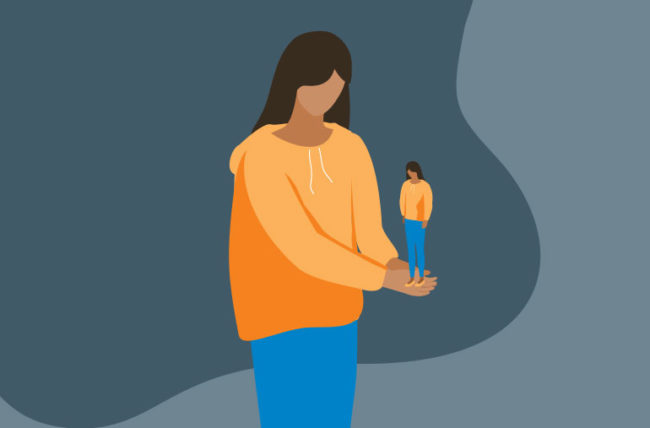

Self-esteem is an essential component of one's mental health and well-being. It refers to the degree to which a person values and respects oneself. Having healthy self-esteem is crucial because it helps individuals make positive choices, form healthy relationships, and cope with the challenges of life.
When individuals have healthy self-esteem, they tend to have a positive outlook on life, believe in their abilities, and have a sense of worthiness. This, in turn, allows them to take risks, try new things, and pursue their goals without fear of failure or rejection. It also enables them to set healthy boundaries and stand up for themselves when needed.
On the other hand, individuals with low self-esteem tend to have negative beliefs about themselves, doubts about their abilities, and feelings of worthlessness. This can lead to anxiety, depression, and a sense of hopelessness. Low self-esteem can also make individuals more susceptible to negative influences and behaviors, such as substance abuse and unhealthy relationships.
Therefore, having healthy self-esteem is essential for mental and emotional well-being. It helps individuals navigate life's challenges, build healthy relationships, and achieve their goals. Cultivating healthy self-esteem requires self-awareness, self-compassion, and self-acceptance. By recognizing one's strengths and limitations, being kind to oneself, and accepting oneself for who they are, individuals can build healthy self-esteem and enjoy a happier, more fulfilling life.